Limbus Company é um RPG (Jogo de roleplay) da Project Moon com foco em leitura e narrativa. Nele, você acompanha um grupo chamado Pecadores, que viaja por diferentes lugares em busca de respostas e enfrenta seus próprios passados.
Cada Pecador é inspirado em um personagem da literatura clássica, como Dom Quixote, Ismael (de Moby Dick) e Gregor (de Metamorfose). Conhecer essas obras literárias ajuda a entender quem eles são e por que agem como agem.
Neste site, você não precisa ter jogado para explorar. Conheça os personagens, descubra os livros que os inspiraram e diga o que achou.

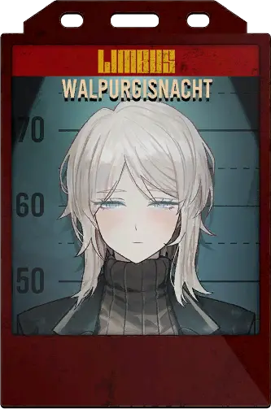
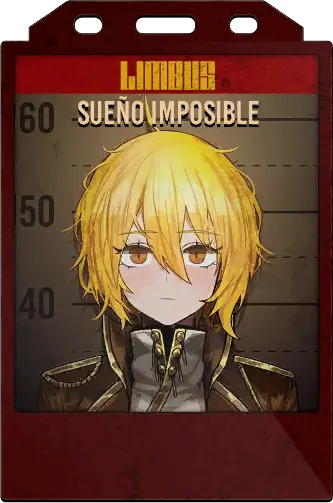
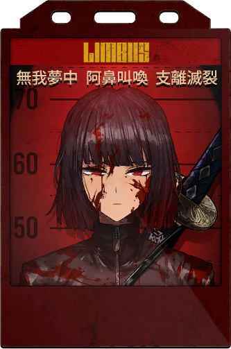
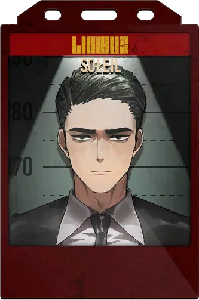
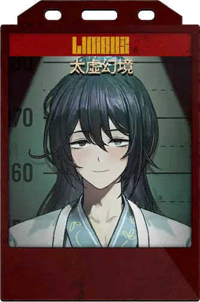
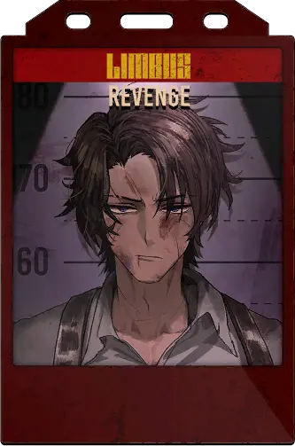
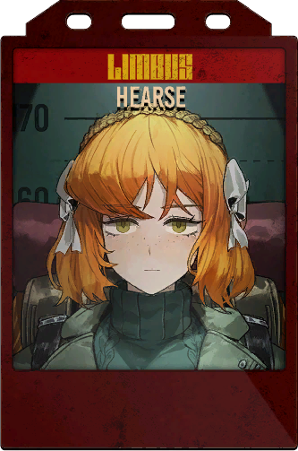
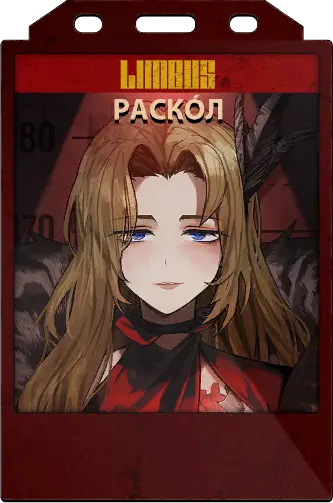
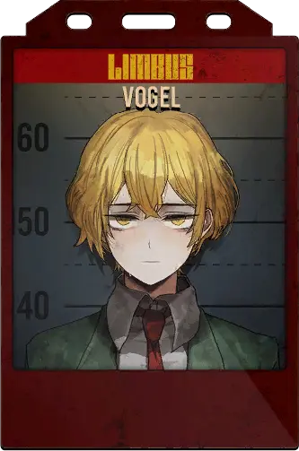
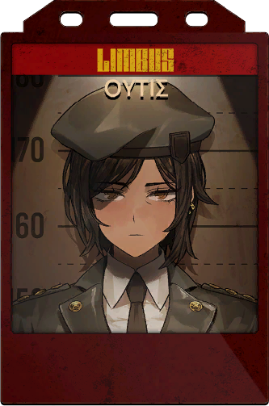
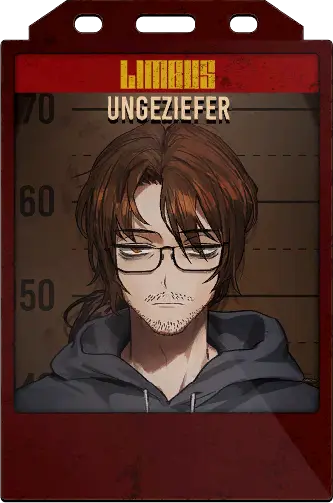